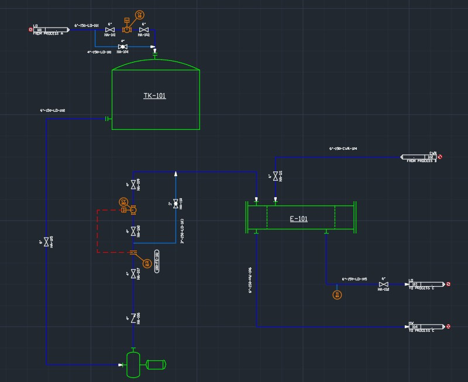

Project Description
Design and 3D modeling of an industrial water treatment and circulation network using AutoCAD Plant 3D.
The system consists of the following components:
- Water storage tank
- Treatment filters
- Heat exchanger
- Circulation pumps
- Interconnected piping network


← Back to Portfolio